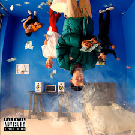

Composição: Teto / Julian Hecker
PAYPAL
LETRA DA MÚSICA
Quem é esse lebesquedo?
Que eu não tô reconhecendo
Parecendo um flaiecstchuflaiol
(What is his name?)
(Ouhboy)
(Ouhboy?)
Yeah, yeah, yeah, yeah (yeah, it's great)
Fiz um show sold out
Enriqueci minha conta no PayPal
Essa grana ainda vai me tirar dessa lama (no Paypal)
Essa bitch não quer amor, ela quer banana (yeah, uh)
Oi, jogo dinheiro na cama, uau
Eu te furo através da parede com a FAL
Não bate de frente que vai virar sal, wow
Pega no meu... holy shit, uh
Up the smoke, só balão
Perde a pose, sou chefão
Jogo lean no meu double cup, bebe, nego
Eu me joguei na rua, me perdi foi cedo
Ahn-ahn
Entra na van-ahn
Diz que é minha fã-ã
Joga pra gan-ahn (sou Tetinho)
Pede mais, quem quеr meu gosto?
Lil' bitch, cai no meu pescoço mеmo'
Eu tava perdido, mas disso eu me lembro
Eu pa' subir hoje me desce veneno
Uh-uh-uh, slaps, hum, wow
Bebe o drink azul
Poucas que eu não sou mais um
Eu vim da Bahia, te causo dor de barriga
Fiz um show sold out
Enriqueci minha conta no PayPal
Essa grana ainda vai me tirar dessa lama (no PayPal)
Essa bitch não quer amor, ela quer banana (yeah, uh)
Oi, jogo dinheiro na cama, uau
Eu te furo através da parede com a FAL
Não bate de frente que vai virar sal, wow
Pega no meu...
Up the smoke, só balão
Perde a pose, sou chefão (uh)
Jogo lean no meu double cup, bebe, nego
Eu me joguei na rua, me perdi foi cedo
Ahn-ahn (uh)
Entra na van-ahn
Diz que é minha fã-ã
Joga pra gan-ahn (sou Tetinho)
Ultimamente minha vida tá louca (sou Tetão)
Eu gasto todo meu dinheiro em roupa
Fuck the prensa, fuck the Sosa (Sosa)
Louis Vuitton estampado na bolsa
E se tu tenta, wow
Minha firma te acaba, wow
Nós só mete bala, pow
É nós que mete bala, pow, wow (é nós que mete bala)
Faço mais um pra essa baby
Desce um Black Label e rolê de Mercedes
Com dez mil no dente, pow, wow
Mas tu sabe que tu é meu fã-ã-ã
Se ela me pede, eu dou, que ela é minha dama
Fuck, meu amor, ela quer minha grana
Fiz um show sold out (slatt)
Enriqueci minha conta no PayPal
Essa grana ainda vai me tirar dessa lama (no PayPal)
Essa bitch não quer amor, ela quer banana (yeah, uh)
Oi, jogo dinheiro na cama, uau
Eu te furo através da parede com a FAL
Não bate de frente que vai virar sal, wow (oh, yeah)
Pega no meu... holy shit, uh (Ouhboy)
Up the smoke, só balão
Perde a pose, sou chefão
Jogo lean no meu double cup, bebe, nego
Eu me joguei na rua, me perdi foi cedo
Ahn-ahn
Entra na van-ahn
Diz que é minha fã-ã
Joga pra ganhar
Shake that ass, shake that ass
Shake that ass (oh shit), shake that ass (shake that ass)
Shake that ass, shake that ass
Shake that ass, shake that ass
Ouhboy, you went dumb on this one
SIGNIFICADO DA LETRA
A música 'PayPal' do artista Teto é uma expressão da cultura do hip-hop contemporâneo, onde temas como sucesso financeiro, ostentação e relações superficiais são frequentemente explorados. A letra descreve a jornada do artista desde a realização de shows lotados até o enriquecimento de sua conta no PayPal, simbolizando o sucesso e a ascensão no mundo da música.
O refrão 'Essa grana ainda vai me tirar dessa lama' reflete a esperança de superar dificuldades financeiras e sociais por meio do sucesso alcançado. A 'bitch' que 'não quer amor, ela quer banana' pode ser interpretada como uma crítica às relações interesseiras, onde o interesse está mais no que o artista pode oferecer materialmente do que em um vínculo emocional genuíno. A ostentação é evidente quando Teto menciona 'jogo dinheiro na cama' e '20k no meu pescoço', mostrando que agora ele pode se dar ao luxo de ter um estilo de vida extravagante.
A música também aborda a ideia de poder e respeito, com frases como 'Não bate de frente que vai virar sal', sugerindo que agora ele tem uma posição de autoridade e não deve ser desafiado. A referência ao 'double cup' e ao 'lean' são elementos típicos da cultura trap, que muitas vezes glorifica o consumo de substâncias e um estilo de vida hedonista. Em suma, 'PayPal' é um retrato da vida de Teto e de muitos outros artistas que encontram no sucesso financeiro e na ostentação uma forma de afirmar seu lugar no mundo da música.